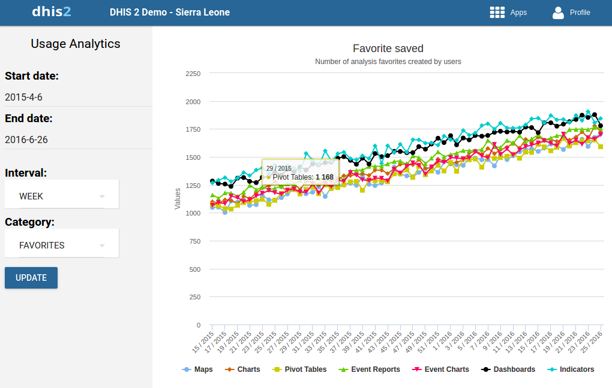

Table of Contents
|  |
The Usage Analytics app lets you visualize statistics on how users are working with the Dashboard, Pivot Table, GIS, Event Visualizer, Data Visualizer and Event Reports apps within DHIS2. With this statistics you can answers questions such as:
How many times people have loaded charts, pivots tables and dashboards?
How many favorites have users created?
How many users that are logging in versus total number of users?
What are the most viewed favorites?